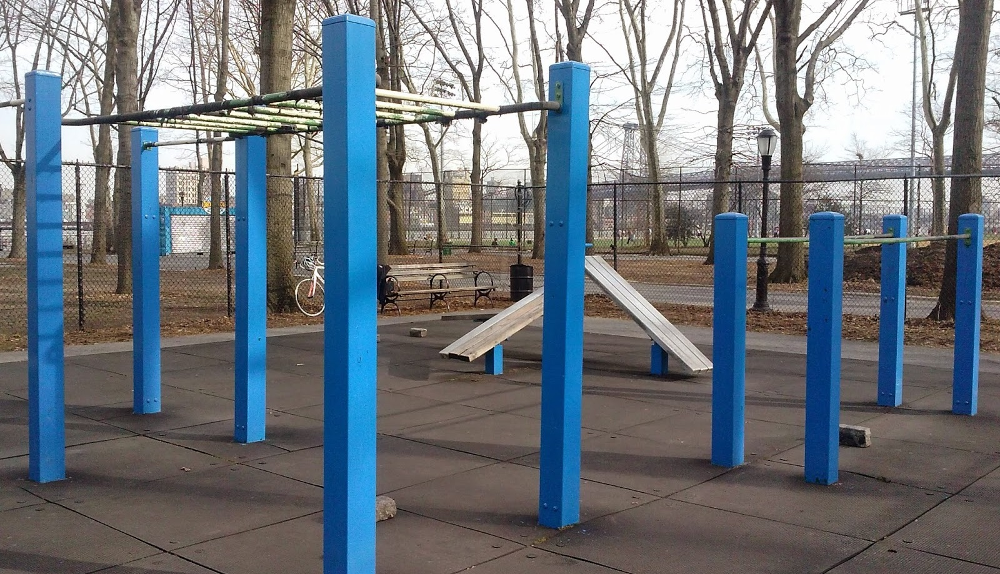

Street Workout
Street Workout - anyone can workout anywhere anytime
 I was a weak and shy kid in my sophomore year of high school, but really wanted to get stronger. I didn’t have no money to go to the gym. But thanks to free street-workout equipment provided in many NYC parks, I was able to make the first move and start training myself in the park.
When I first started, I could barely do 3 pull-ups. I continued to go to the park every day after school. I started to do 5 pull-ups with weeks of training, then 8 pull-ups with months of training, and then 20s with years of training. Now I am working on something more interesting and challenging, like human flag and planche.
I have been doing street workout since 2011. Street workout has taught me many things. Among one is that “ strong confidence and strength have no shortcut, but are simply the accumulated results of simple day by day practice and hard work”.
Teaching and Spreading Empowerment
Street workout has empowered me and shaped my life. I love and have been teaching many children, adults and elders about street workout in the park to spread the empowerment.
Most recently, I went back to NYC for Thanksgiving break. While I was doing street workout in Brooklyn McKinley Park, I met and ran into street workouter Mario, who told me he had been practicing muscle up for few months but not making much progress. I taught him three techniques and guided his practice for 30 mins. Mario then went from half way up, almost up to finally muscle up. I took a video of Mario successfully doing the first muscle up in his life (as shown below left). Mario was super excited and ran toward me and hugged me so hard when he came down from the bar. Muscle up is a milestone of street workout, and I could totally relate with Mario’s feeling as I myself was feeling the same when I did my first muscle up 5 years ago. Reflecting back, I have trained and taught people muscle up in NYC, Shenzhen, Vienna, Munich, Shanghai, basically wherever I went… It is simply awesome to empower others and guide them for break through. (Mario wanted to take a video of his master for instagram so he asked me to show off a bit, so we have another video shown below right.)
Global Community
Street workout was originally started in NYC, but it has grown into a global activity. It easily bonds people anywhere in the world, regardless of background, race, ethnicity, gender, age… because anyone working hard to empower themselves would respect others doing the same. In the future, I look forward to be more actively involved in promoting and spreading street workout to a bigger audience.
For now, I am going to end this with two inspirational videos, the left filming a 70 years old grandpa doing bar dips in Brooklyn and the right filming a 80 years old grandpa doing bar dips in Shanghai. It is never too late to start street workout, if grandpa can do it, you can do it too! (Warning: Both grandpas have been training for at least a year. Bar dips are actually difficult, attempt bar dips only if you can do at least 10 push ups or you will risk injuring yourself.)
Practicing Human Flag
And yeah, I am still working on mastering more challenging moves in street workout. It has become part of my life.